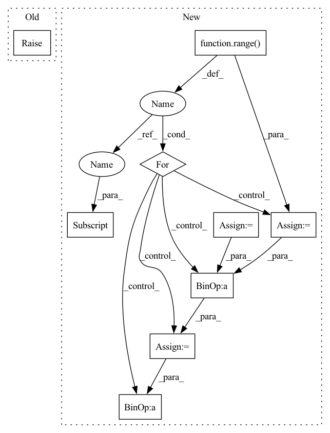

Pattern ID :6084

Before Change
Returns: values of Vnn * psi
"""
raise NotImplementedError()
def kinetic_energy(self, pos):
"""Main switch for the kinetic energy."""
After Change
vnn = 0.
for at1 in range(self.natom - 1):
c0 = self.ao.atom_coords[at1, :]
Z0 = self.ao.atomic_number[at1]
for at2 in range(at1 + 1, self.natom):
c1 = self.ao.atom_coords[at2, :]
Z1 = self.ao.atomic_number[at2]
rnn = torch.sqrt(((c0 - c1)**2).sum())
vnn += Z0 * Z1 / rnn
return vnn
def kinetic_energy(self, pos):
In pattern: SUPERPATTERN
Frequency: 3
Non-data size: 9
Instances
Fragment ID: 21113922
Project Name: nlesc-jcer/qmctorch
Commit Name: adaaa1ed349fb72bbacad1c74788252742eddbf5
Time: 2020-05-25
Author: nicolas.gm.renaud@gmail.com
File Name: qmctorch/wavefunction/wf_base.py
M Class Name: WaveFunction
N Class Name: WaveFunction
M Method Name: nuclear_repulsion(1)
N Method Name: nuclear_repulsion(1)
M Parent Class: torch.nn.Module
N Parent Class: torch.nn.Module
M File Name: qmctorch/wavefunction/wf_base.py
N File Name: qmctorch/wavefunction/wf_base.py
M Start Line: 57
M End Line: 57
N Start Line: 94
N End Line: 103
'>
Before Change
raise NotImplementedError
def _gae(self):
raise NotImplementedError
def _policy_loss(self, policy, actions, advantage):
log_pi_for_actions = self.distribution.log_prob(policy, actions)
After Change
def _gae(self, values, next_values, rewards, not_done):
rollout_len = rewards.size(0)
values = torch.cat([values, next_values[-1:]], dim=0)
gae = 0
returns = []
for t in reversed(range(rollout_len)):
delta = rewards[t] + self.gamma * not_done[t] * values[t + 1] - values[t]
gae = delta + self.gamma * self.gae_lambda * not_done[t] * gae
returns.append(gae + values[t])
returns = torch.stack(returns[::-1])
return returns
'>
Fragment ID: 21113890
Project Name: cherrypiesexy/imitation_learning
Commit Name: c12cbbcb50a2fb415bde5b6f51e63ab88408cadf
Time: 2020-05-05
Author: dmitry.akimov@giant.ai
File Name: algorithms/a2c.py
M Class Name: A2C
N Class Name: A2C
M Method Name: _gae(5)
N Method Name: _gae(1)
M Parent Class:
N Parent Class:
M File Name: algorithms/a2c.py
N File Name: algorithms/a2c.py
M Start Line: 64
M End Line: 65
N Start Line: 73
N End Line: 83
'>
Before Change
Returns: values of Ven * psi
"""
raise NotImplementedError()
def nuclear_repulsion(self):
"""Compute the nuclear repulsion term
After Change
p = torch.zeros(pos.shape[0], device=self.device)
for ielec in range(self.nelec):
istart = ielec * self.ndim
iend = (ielec + 1) * self.ndim
pelec = pos[:, istart:iend]
for iatom in range(self.natom):
patom = self.ao.atom_coords[iatom, :]
Z = self.ao.atomic_number[iatom]
r = torch.sqrt(((pelec - patom)**2).sum(1)) // + 1E-12
p += -Z / r
return p.view(-1, 1)
def nuclear_repulsion(self):
'>
Fragment ID: 21113927
Project Name: nlesc-jcer/qmctorch
Commit Name: adaaa1ed349fb72bbacad1c74788252742eddbf5
Time: 2020-05-25
Author: nicolas.gm.renaud@gmail.com
File Name: qmctorch/wavefunction/wf_base.py
M Class Name: WaveFunction
N Class Name: WaveFunction
M Method Name: nuclear_potential(2)
N Method Name: nuclear_potential(2)
M Parent Class: torch.nn.Module
N Parent Class: torch.nn.Module
M File Name: qmctorch/wavefunction/wf_base.py
N File Name: qmctorch/wavefunction/wf_base.py
M Start Line: 50
M End Line: 50
N Start Line: 72
N End Line: 82
'>
Before Change
Returns: values of Vnn * psi
"""
raise NotImplementedError()
def kinetic_energy(self, pos):
"""Main switch for the kinetic energy."""
After Change
vnn = 0.
for at1 in range(self.natom - 1):
c0 = self.ao.atom_coords[at1, :]
Z0 = self.ao.atomic_number[at1]
for at2 in range(at1 + 1, self.natom):
c1 = self.ao.atom_coords[at2, :]
Z1 = self.ao.atomic_number[at2]
rnn = torch.sqrt(((c0 - c1)**2).sum())
vnn += Z0 * Z1 / rnn
return vnn
def kinetic_energy(self, pos):
'>
Fragment ID: 21113800
Project Name: nlesc-jcer/qmctorch
Commit Name: adaaa1ed349fb72bbacad1c74788252742eddbf5
Time: 2020-05-25
Author: nicolas.gm.renaud@gmail.com
File Name: qmctorch/wavefunction/wf_base.py
M Class Name: WaveFunction
N Class Name: WaveFunction
M Method Name: nuclear_repulsion(1)
N Method Name: nuclear_repulsion(1)
M Parent Class: torch.nn.Module
N Parent Class: torch.nn.Module
M File Name: qmctorch/wavefunction/wf_base.py
N File Name: qmctorch/wavefunction/wf_base.py
M Start Line: 57
M End Line: 57
N Start Line: 94
N End Line: 103